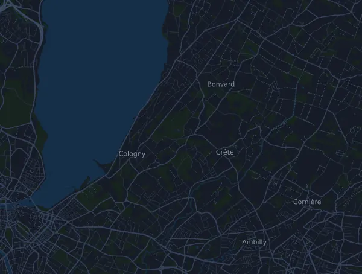

Genève Marathon – Marathon 42.2 km
- Distance
- 42.2 km
- Elevation gain
- ↑ 183 m
- Highest point
- 457 m a.s.l.
- Surface
- Road
- Profile
- Flat
- Start
- 09:00
Elevation profile
Prepare with Mila
Mila is a running coach app. Add a race to your plan and the coach plans your weeks up to race day around your form, and gives you a finish-time forecast and a plan for pacing, drinks and fuel on the course.

The right run, on the right day.
The course

About the course
Generali Genève Marathon – Marathon is a road race in Cologny, Switzerland, over 42.2 km. The course climbs 183 m and descends 237 m in total, 4.3 m per km, which makes it flat. The highest point is 457 m above sea level and the lowest 373 m.
The biggest climb starts at km 10.8: 26 m of ascent over 1.7 km at 1.5 % on average, up to 457 m. In total the course has 2 climbs of at least 25 m; the last one starts at km 10.8.
In the Mila app, the coach describes the course in detail in your language and plans your pacing and fueling for it.
Climbs
| Starts at | Length | Gain | Gradient | Top (m above sea level) |
|---|---|---|---|---|
| km 0.4 | 8 km | 25 m | 0.3 % | 449 |
| km 10.8 | 1.7 km | 26 m | 1.5 % | 457 |
Before the start
Start times
- 09:00
Source: generaligenevemarathon.com, retrieved 15 October 2026
Pace table
Genève Marathon – Marathon 42.2 km in 3:00:00 – pace per km and splits
4:16 per km · km 10: 42:39 · km 21.1: 1:30:00 · km 30: 2:07:58 · km 40: 2:50:37 · finish: 3:00:00
Genève Marathon – Marathon 42.2 km in 3:30:00 – pace per km and splits
4:59 per km · km 10: 49:46 · km 21.1: 1:45:00 · km 30: 2:29:17 · km 40: 3:19:03 · finish: 3:30:00
Genève Marathon – Marathon 42.2 km in 4:00:00 – pace per km and splits
5:41 per km · km 10: 56:52 · km 21.1: 2:00:00 · km 30: 2:50:37 · km 40: 3:47:29 · finish: 4:00:00
Genève Marathon – Marathon 42.2 km in 4:30:00 – pace per km and splits
6:24 per km · km 10: 1:03:59 · km 21.1: 2:15:00 · km 30: 3:11:57 · km 40: 4:15:55 · finish: 4:30:00
The times assume an even pace the whole way. This is plain arithmetic, not a forecast: on climbs, in crowds and at aid stations the pace varies.
Frequently asked questions
When is Genève Marathon – Marathon 42.2 km?
Genève Marathon – Marathon 42.2 km takes place on Sunday, 9 May 2027. Check the date and start time with the organizer.
What time does Genève Marathon – Marathon 42.2 km start?
According to the organizer: 09:00.
How long is Genève Marathon – Marathon 42.2 km and how much climbing is there?
The race is 42.2 km with 183 m of climbing and 237 m of descent. The highest point is 457 m above sea level.
What is the course of Genève Marathon – Marathon 42.2 km like?
The course is flat, with 4.3 m of climbing per km on average. It has 2 climbs of at least 25 m; the biggest starts at km 10.8: 26 m over 1.7 km. It runs from the start to a finish in another place. The surface is road.
How should I pace Genève Marathon – Marathon 42.2 km?
Aim for an even effort the whole way, and hold back in the first kilometres when your legs feel fresh and the field pulls away. The course is flat, so an even pace per kilometre works well. In Mila you get a pace plan for this course, based on your own form.
More races like this
More races nearby
- Swiss Canyon Trail – 111K5 June 2027 · Couvet, Switzerland
- OCHSNER SPORT Zürich Marathon (Marathon) 42.2 km11 April 2027 · Zürich, Switzerland
- Kerzerslauf – 15 km (Der Klassiker)20 March 2027 · Kerzers, Switzerland
- Trail Verbier St-Bernard by UTMB – X-Alpine (140 km)9 July 2027 · Verbier, Switzerland
- Eiger Ultra Trail by UTMB – E101 Ultra Trail17 July 2027 · Grindelwald, Switzerland
- Davos X-Trails (tidigare Swissalpine Davos) – Diamond Run 68 km24 July 2027 · Davos, Switzerland
Prepare with Mila
The right run, on the right day.
Details come from the course file and the organizer's information. Check the date, start times and rules with the organizer.
Mila is not affiliated with, sponsored by or endorsed by the organizer or the race's sponsors. Names and trademarks belong to their owners. Organizer or rights holder? Ask for a change or a removal